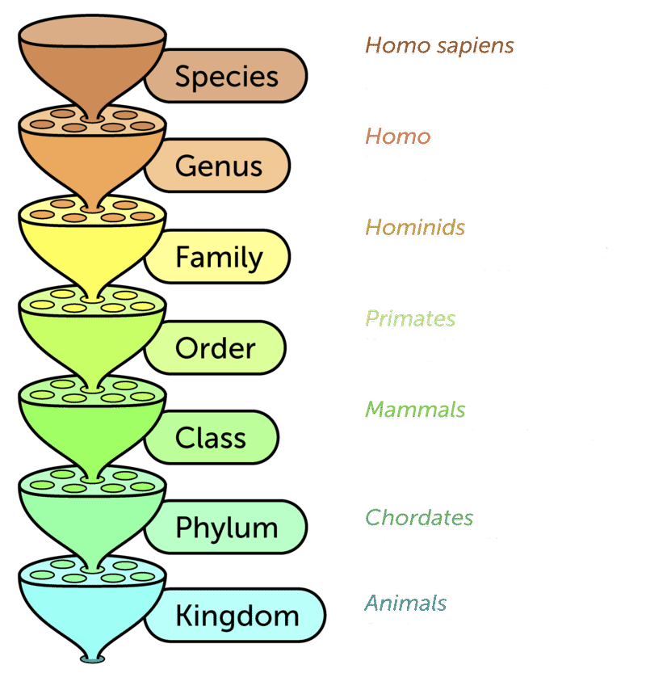

|  |
HOW DOES SPECIES NAMING WORK? Binomial nomenclature is a formal naming system by which a species is assigned a unique name composd of two Latin parts called a binomial name (or just "binomial"). The first part identifies the species' genus (which must be capitalized) and the second part identifies the species' specific epithet. As humans, our species' binomial name is Homo sapiens (Latin: Homo "man", sapiens "wise"), Homo being the genus and sapiens being the epithet. In print, the whole binomial must be italicized ("Homo sapiens") and underlined in writing ("Homo sapiens"). Our full taxonomy can be seen in the graphic to the left. In short, taxonomy (Greek: taxis "arrangement", -nomia "method") is the science of classifying and naming organisms based on shared characteristics. Each of these groups is called a taxa, represented by a single row in the graphic. If two or more species share the same taxa, then they are related in some manner with species sharing a higher taxa having more in common with each other than ones that share a lower taxa. ABOUT THIS SITE I made the homepage by embedding <a>'s inside of <span>'s to provide hyperlink functionality. When hovering a box, its luminosity increases slightly and its text shows the order name. The lighting change was done simply in the page's index.css file via the :hover selector, replacing the original background with a slightly brighter version of itself. The text change on the homepage had to be done using Javascript by invoking a show(var order) and hide(var order) function when the cursor hovers over and leaves the <span> respectively. Additionally, the user must interact with a <select> when visiting an order's page in order to explore a family. This functionality was accomplished by invoking a show(var family) whenever a <option> is clicked, the function being given the name of the family. The website's appearance and functionality is so simple I could write its entirety by scratch. Therefore, I did not use any external resources other than images from third-party websites. IMAGE SOURCES (link) |